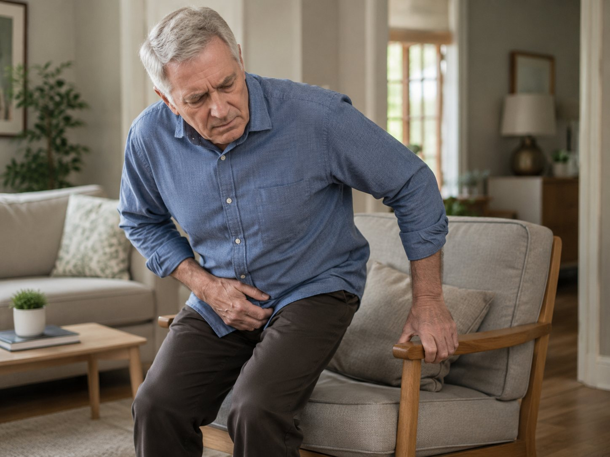
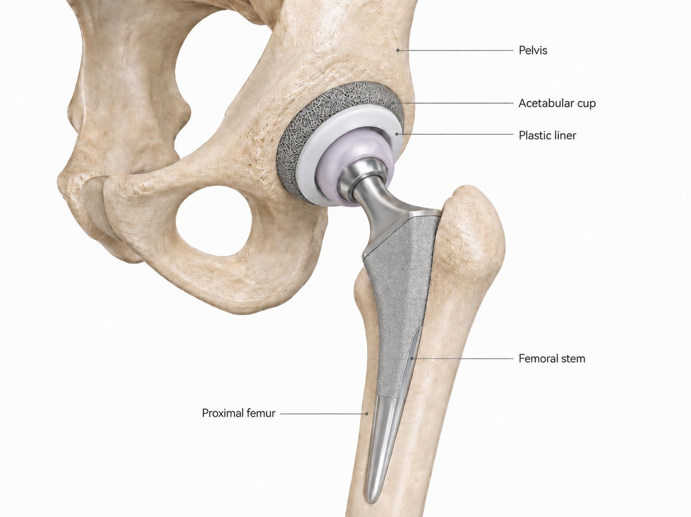
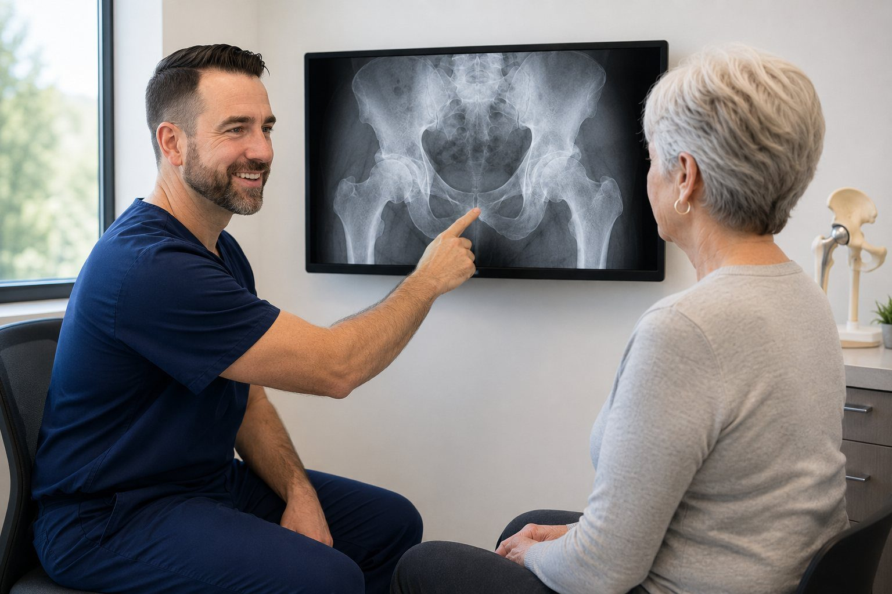
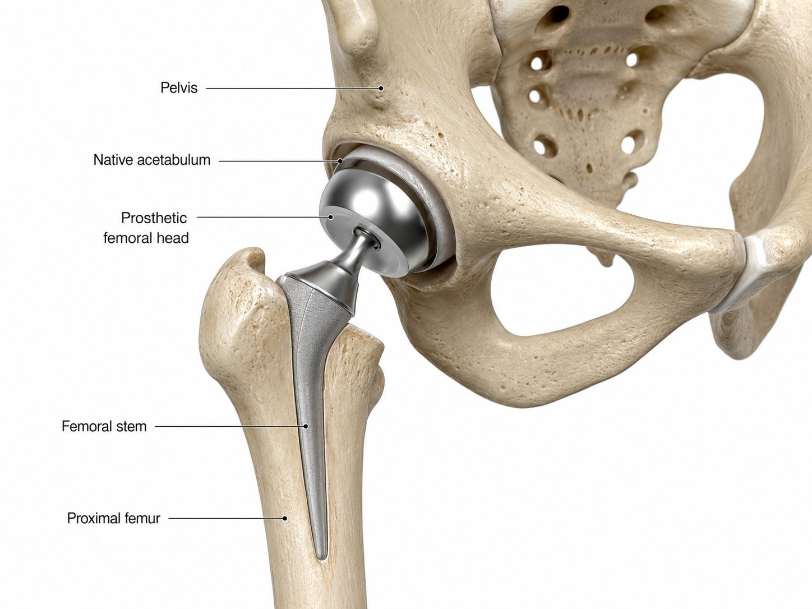
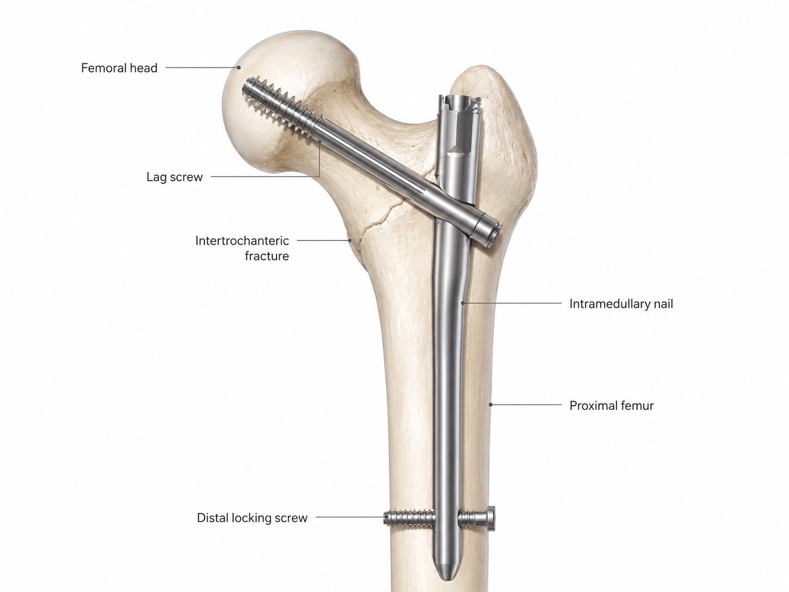
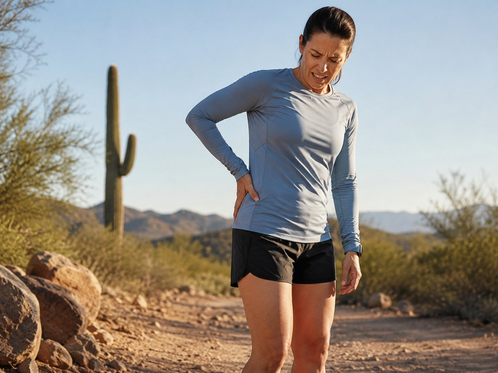
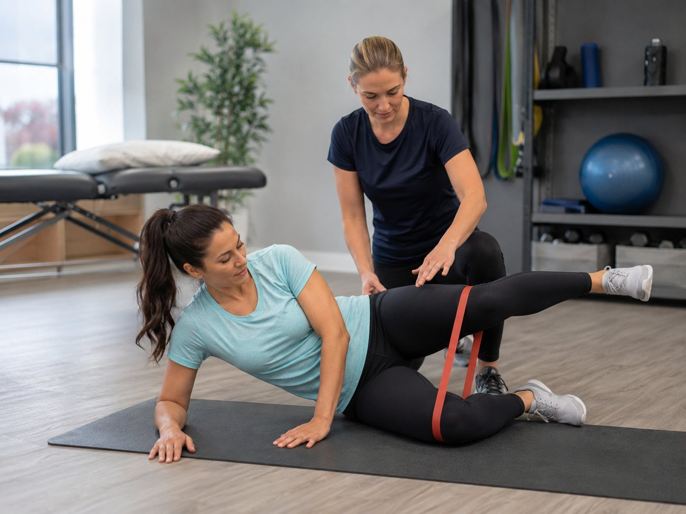
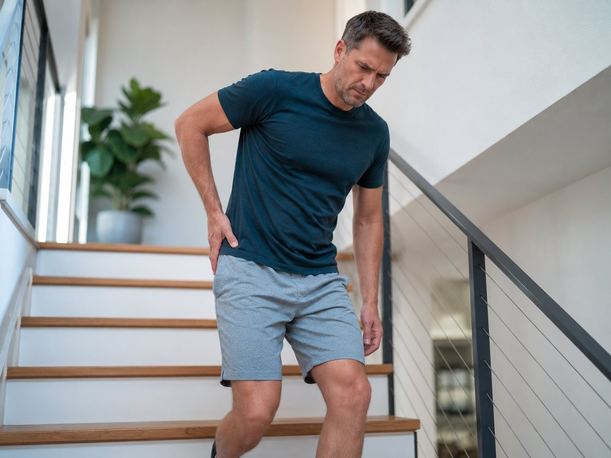
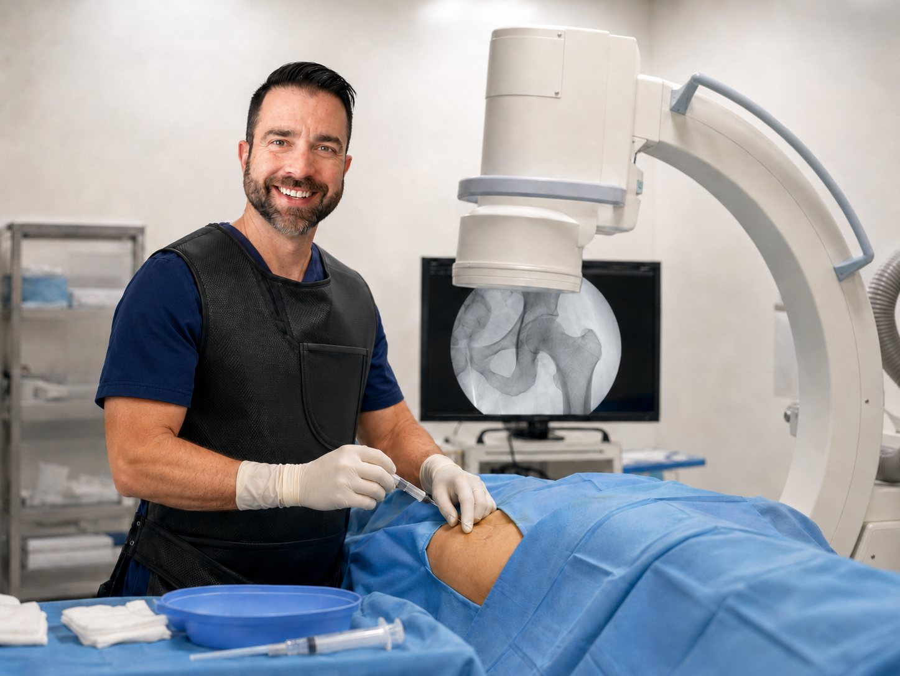
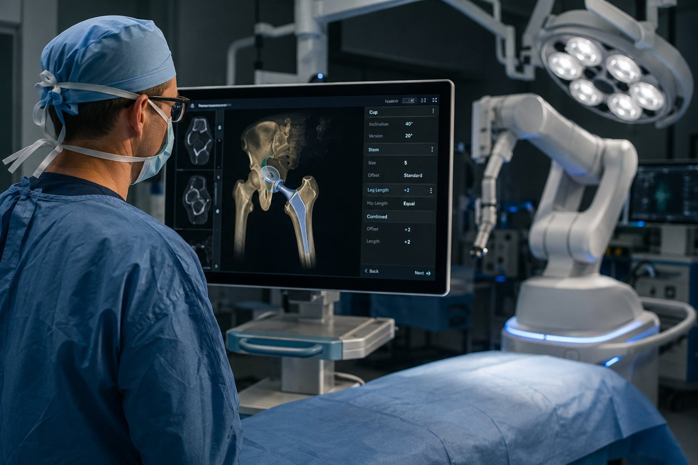

Hip arthritis
Deep groin pain, stiffness, limping, night pain, difficulty walking, and trouble with stairs, shoes or socks may signal hip arthritis.
PT/injections first when appropriateTotal hip replacement
Hip pain can quietly shrink your life: shorter walks, poor sleep, trouble with stairs, less golf, less travel and less confidence staying active. Dr. Barnes helps patients sort out arthritis, bursitis, fractures and spine-overlap symptoms with a clear plan built around movement, independence and shared decision-making.

Hip and back pain can overlap. Intra-articular hip pain most commonly reflects into the groin and front of the hip. Patients often notice stiffness, difficulty rotating the leg, trouble putting on shoes or socks, and pain getting in or out of a car.
Back-related pain more often starts in the low back or buttock and can radiate down the leg. Numbness, tingling, burning pain, weakness, or symptoms that travel below the knee can suggest nerve irritation from the spine.
The hip is designed for powerful, smooth motion. Pain may come from the joint surface, the femoral head and neck, the trochanteric region, nearby tendons and bursa, fractures, or referred pain from the spine.
Each diagnosis has a different pattern. The goal is not to push every patient toward surgery, but to identify the main pain generator and choose a treatment plan that fits the problem.


Deep groin pain, stiffness, limping, night pain, difficulty walking, and trouble with stairs, shoes or socks may signal hip arthritis.


Displaced femoral neck fractures in older adults often require hemiarthroplasty or total hip replacement depending on the patient, baseline function, arthritis and fracture pattern.

These fractures occur in the upper femur below the femoral neck and are commonly treated with a rod-and-screw construct to stabilize the bone while it heals.


Pain over the outside of the hip may come from the bursa, abductor tendons, iliotibial band, gait mechanics or referred symptoms.


Catching, pinching, thigh pain or mixed hip/back symptoms require careful diagnosis. If a treatment is outside Dr. Barnes’ scope, he can help guide the next appropriate step.

When pain, stiffness and loss of independence persist despite reasonable nonoperative care, hip replacement may become part of the discussion.
The best treatment depends on the diagnosis, the severity of symptoms, imaging findings, health status, goals and expected recovery.
For advanced arthritis, collapse or selected fracture patterns when pain and function justify reconstruction.
When appropriate, robotic-assisted planning can help execute a patient-specific hip replacement plan.
Often used for selected femoral neck fractures, replacing the femoral head while preserving the socket.
Common fixation for intertrochanteric fractures and selected proximal femur fracture patterns.
Can be diagnostic and therapeutic, especially when hip and spine symptoms overlap.
Total hip replacement may be considered when hip arthritis causes persistent groin pain, stiffness, sleep disruption, loss of walking tolerance, or loss of independence despite reasonable nonoperative treatment.
The decision is not based on the X-ray alone. It should match the patient’s symptoms, exam, imaging, medical risk, goals and expectations. Dr. Barnes uses a shared decision-making model so patients understand the options and participate in the decision.
Hip fracture treatment depends on the location of the fracture, displacement, bone quality, baseline function, medical risk and patient goals.
These fractures occur near the ball of the hip. Treatment may include fixation, hemiarthroplasty or total hip replacement depending on the pattern and patient factors.
For many displaced femoral neck fractures in older adults, replacing the femoral head can allow early mobilization and pain control.
Selected active patients with femoral neck fractures may be candidates for total hip replacement rather than hemiarthroplasty.
These fractures are commonly stabilized with a cephalomedullary nail to hold the fracture while it heals.
Many patients are walking the same day or the next day after hip replacement, depending on health, surgical setting and support. Early recovery focuses on safe walking, pain control, swelling reduction, wound healing and gradually restoring strength.
Most patients start with a walker, then transition as confidence, balance and strength improve. Recovery continues over weeks to months.
These answers are general education and do not replace an exam, imaging review or individualized medical advice.
Pain from inside the hip joint usually shows up as deep groin pain, front-of-hip pain, stiffness, trouble putting on shoes or socks, or pain getting in and out of a car. Back-related pain more commonly starts in the low back or buttock and may radiate down the leg. Numbness, tingling, burning pain, weakness, or pain traveling below the knee can suggest nerve irritation from the spine. Many patients have both hip and back findings, so the exam, X-rays and sometimes diagnostic injections help sort out the main source.
Hip arthritis most commonly causes deep groin pain or pain in the front of the hip. It can also refer pain to the thigh, buttock or knee. Patients are often surprised that a hip problem can make the knee hurt even when the knee joint is not the main issue.
Worsening groin pain, stiffness, limping, night pain, reduced walking distance, difficulty with stairs, trouble standing from a chair, and difficulty putting on shoes or socks can suggest progression. X-rays help show severity, but treatment decisions should also consider function, goals and quality of life.
No. Hip replacement is not based on an X-ray alone. Some patients have advanced arthritis on imaging but manageable symptoms. Others have symptoms that match severe imaging findings and are substantially limited. The decision should be individualized.
Nonsurgical treatment may include activity modification, weight optimization, home exercise, physical therapy, walking aids, anti-inflammatory medication when safe, and injections. These treatments do not regrow cartilage, but they may reduce symptoms and help maintain function.
Yes. When hip and back symptoms overlap, an image-guided hip injection can be useful. If numbing medicine placed into the hip joint significantly improves the groin pain, that supports the hip joint as a major pain generator.
Total hip replacement replaces both the ball and socket sides of the joint. Hemiarthroplasty replaces the femoral head while leaving the patient’s natural socket in place. Hemiarthroplasty is commonly used for selected femoral neck fractures, while total hip replacement is commonly used for advanced arthritis and selected fracture patients.
Treatment depends on displacement, age, baseline activity, arthritis, bone quality and medical risk. Options may include fixation, hemiarthroplasty or total hip replacement. Displaced femoral neck fractures in older adults commonly require arthroplasty.
Intertrochanteric fractures are commonly treated with a cephalomedullary nail, which stabilizes the upper femur with a rod-and-screw construct while the bone heals.
Outside-of-hip pain may come from greater trochanteric pain syndrome, bursitis, abductor tendon irritation, iliotibial band irritation, gait mechanics, or referred symptoms from the spine. Treatment often starts with therapy, load modification and targeted anti-inflammatory strategies.
Recovery varies by patient, but many patients walk shortly after surgery with a walker or assistive device. The first weeks focus on safe mobility, pain control and wound healing. Strength, endurance and confidence usually continue improving over several months.
No. Dr. Barnes does not perform hip arthroscopy. He evaluates hip pain, arthritis, fractures, injections and hip replacement. If a patient appears to need a procedure outside his scope, he can help guide the next appropriate referral.
Whether the issue is arthritis, bursitis, a fracture, an injection question or uncertainty about hip versus back pain, the first step is a careful diagnosis and a practical discussion of your options.
5601 Highway 95 N, Suite 714 · Lake Havasu City, AZ 86404